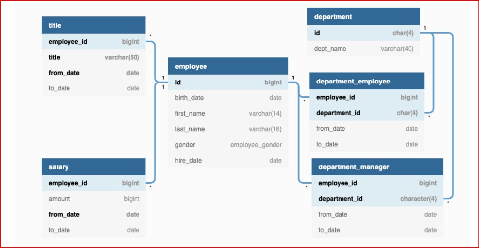
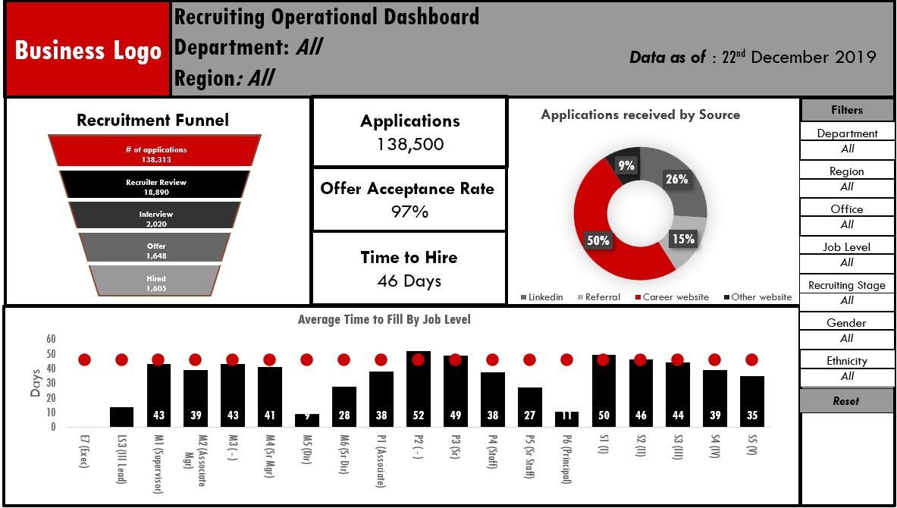
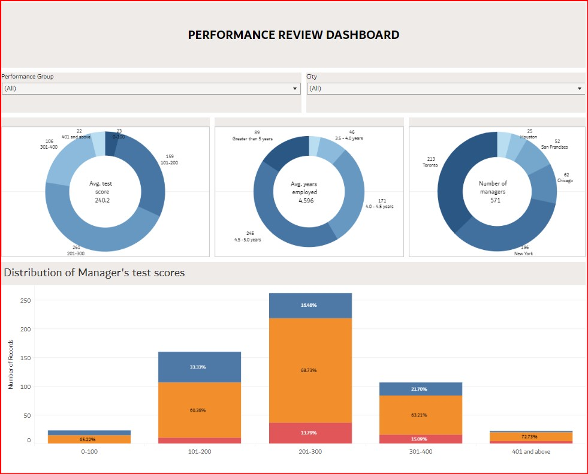
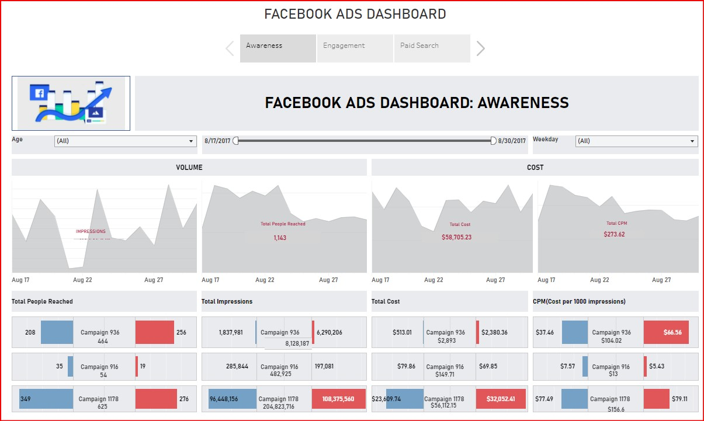
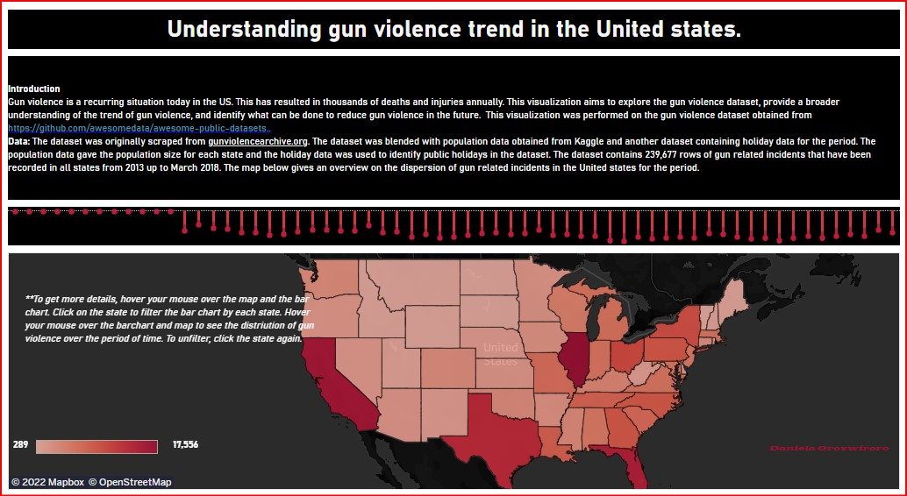

Tools: SQL & PYTHON
This is a case study in the serious sql course using an extract data.
In this project,I use python and SQL to explore and get insights from the employee datasets.
This analysis can be further used to create dashboards to drive people analytics reporting.


Businesses spend time and money to source, engage, screen, interview, hire, onboard, integrate
and retain talents in the organization. With the availability of data, HR professionals can
measure, optimize and show the business value of the recruiting process. This analysis
leverages recruiting data to understand the recruiting efforts and track metrics that
enables the company attract and hire the right talent.

This dashboard shows a reporting for performance management
of employees in an organization. The dashboard gives information on test ranking for managers
which can be filtered to get more in depth information.

Facebook is not just a social network that connects people with their friends, family and others who work, study and live around them. It also offers other features as well. This project is focused on advertising on Facebook which helps businesses meet new customers and stay in touch.

This dashboard visualizes gun violence trend in the United states from 2013 to 2018 providing insights on locations, frequency and demographics of the incident.